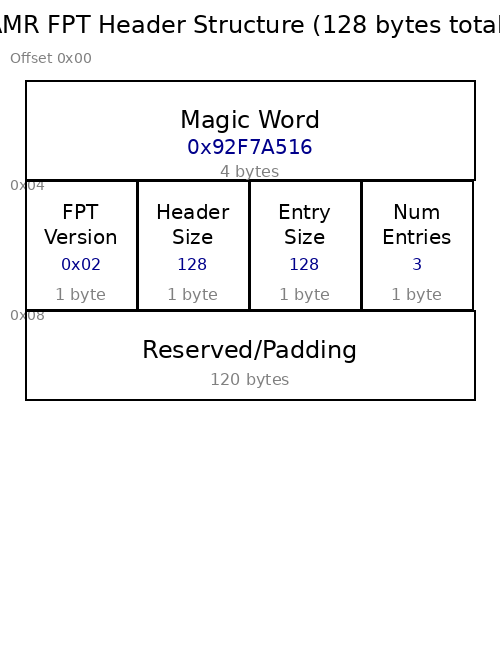
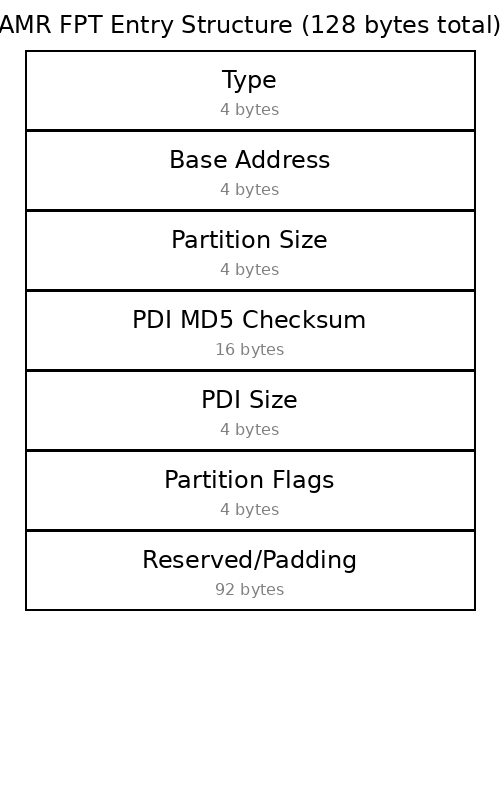

AMR - Device Programming¶
Overview¶
This page describes how AMR boots from card’s configuration storage devices and how the AMR Management Controller (AMC) and its companion AMR Management Interface (AMI) utility allow programming images to be transferred into the card’s configuration storage device. Because AMR uses the regular AMD Vivado™ design flow and generates full programming PDIs, the amount of programming and management infrastructure is greatly simplified compared to a full DFx flow, but still allows selecting and reprogramming which image is used to boot the card.
Configuration Storage¶
The primary configuration storage device of the Alveo V80 card is a 2Gb (256MB) OSPI memory and the card’s boot mode selection pins are set to boot the card with programming images from this memory. The RAVE reference platform uses a 1Gb (128MB) OSPI memory.
Additionally, the V80 platform includes a 64GB eMMC storage device that can be used as a secondary boot device or for storing additional programming images and user data. The RAVE platform does not include eMMC storage.
Using Vivado hardware manager during application development allows JTAG download of programming images to the FPGA or the OSPI configuration storage.
In deployment, the AMC allows new programming images to be written into the configuration storage device.
Configuration Storage Programming¶
The AMC firmware component of AMR is expected to be the standard way to load new programming images onto the card. The firmware running on the R5 processors of the card’s processing subsystem receives copies of new programming information for the card’s configuration storage device. A data transfer from the PCIe® host to a DDR buffer subsequently writes the programming image into the non-volatile configuration storage device.
As noted in the section above, it is also possible to download new images to the card via JTAG, but this approach requires physical access to the card and a suitable JTAG programming cable connected to the card.
Application developers familiar with other Alveo cards may be familiar with the ‘A-B update’ scheme that allowed storage of an active and a backup programming image in the configuration storage memory. AMR supports a similar partitioning scheme for the configuration storage memory so that multiple programming images can be stored in the memory. The AMC firmware and its companion AMI utility program allow the new programming images to be written into specific partitions of the configuration storage memory. To keep track of how many partitions are available within the configuration storage memory, AMC firmware uses a flash partition table. This is a small data structure written at offset 128KB (0x20000) in the OSPI configuration storage device.
An explanation of the flash partition table data structure and an outline of the AMC process for updating the configuration storage are provided in the subsections below.
Flash Partition Tables¶
The AMR Flash Partition Table (FPT) is stored at offset 128KB (0x20000) in the AMR OSPI memory. The purpose of the AMR FPT is to specify how the OSPI’s raw memory is to be divided up into distinct partitions, with each partition intended to contain a different AMR-based application PDI. There are two types of content within the AMR FPT. The first is a fpt_header, which exists at the start of every FPT and specifies some basic characteristics of the FPT. The second is one or more fpt_entry declarations that give the specification of a partition within the remaining pages of the OSPI memory.
AMR FPT Header¶
The diagram below shows the memory layout of an AMR fpt_header (128 bytes total):

Magic Word (4 bytes, offset 0x00): Used by the AMC firmware to confirm that the data that follows is indeed an AMR FPT header.
The magic word used by AMR FPT headers is 0x92F7A516.
This value is intentionally different from the FPT magic word used in earlier Alveo products to distinguish AMR FPTs from non-AMR Alveo designs and software stacks.
FPT Version (1 byte, offset 0x04): Allows future versions of the AMR FPT header to be identified in the event that an end user wishes to extend or update the AMR FPT.
Current version: 0x02 (version 2)
Header Size (1 byte, offset 0x05): Indicates the number of bytes reserved for AMR FPT header content.
Fixed at 128 bytes
Entry Size (1 byte, offset 0x06): Indicates the byte size of each subsequent AMR fpt_entry.
Fixed at 128 bytes per entry
Num Entries (1 byte, offset 0x07): Indicates how many AMR fpt_entry instances follow the fpt_header.
Current implementation: 3 partitions
Reserved/Padding (120 bytes, offset 0x08-0x7F): Reserved space to make the total header size 128 bytes.
AMR FPT Entry¶
The diagram below shows the content of an AMR fpt_entry (128 bytes total):

Type (4 bytes): Indicates the type of content in the partition of the configuration storage device memory declared by this entry.
In the AMR baseline implementation of FPT, multiple partition types are supported:
PDI_BOOT (0x0E00): PDI boot image
PDI_BOOT_BACKUP (0x0E01): PDI boot backup image
PDI_USER (0x0F00): User PDI partition
And other types for metadata, APU/RPU PDIs, and system DTBs
Base Address (4 bytes): Indicates the address offset of the beginning of the partition in the configuration storage device memory.
Note: The AMD Versal™ PLM requires each PDI to be aligned to 32KB boundaries within the OSPI address space.
Partition Size (4 bytes): Indicates the size (in bytes) of the OSPI memory reserved for the given partition.
The partition should be sized large enough for the PDI content to be placed within it.
PDI MD5 Checksum (16 bytes): Contains the MD5 hash of the PDI file for integrity verification during programming.
PDI Size (4 bytes): Stores the actual size of the PDI file in bytes.
Partition Flags (4 bytes): User-defined flags for partition configuration, including:
Bit 0: Power-on load flag (0=Disabled, 1=Enabled)
Bits 16-17: Power-on load status (0=Not Loaded, 1=Loaded, 2=Error)
Remaining bits reserved for future use
Reserved/Padding (92 bytes): Reserved space to make the total entry size 128 bytes.
Multiple instances of the AMR fpt_entry can be declared following the fpt_header declaration. In the baseline AMR implementation, three partitions are declared:
Partition 0: Primary PDI boot partition
Partition 1: Backup PDI boot partition (for fallback boot capability)
Partition 2: User PDI partition
The backup partition with the higher base address offset serves as a backup PDI boot image in case the PDI content of the first partition fails to load correctly during development. This resilient boot behavior is provided by default thanks to Versal’s standard fallback boot capability.
Initializing the OSPI with FPT content¶
During the AMR build process, the fpt step processes the FPT configuration and outputs a binary image of the AMR FPT. The FPT configuration defines the partition layout for the OSPI flash memory.
For the V80 profile with 256MB OSPI flash, the configuration is:
FPT Header:
Magic Word: 0x92F7A516
FPT Version: 2
FPT Header Size: 128 bytes
FPT Entry Size: 128 bytes
Number of Entries: 3
FPT Entry Offset: 128KB (0x20000)
Partition 0 (PDI Boot):
Type: 0x0E00 (PDI_BOOT)
Base Address: 0x00080000 (512KB)
Partition Size: 0x07400000 (116MB)
Partition 1 (PDI Boot Backup):
Type: 0x0E00 (PDI_BOOT)
Base Address: 0x07480000
Partition Size: 0x07400000 (116MB)
Partition 2 (User PDI):
Type: 0x0F00 (PDI_USER)
Base Address: 0x0E880000
Partition Size: 0x01700000 (23MB)
For the RAVE profile with 128MB OSPI flash, the partition sizes are smaller:
Partition 0: 58MB at 0x00080000
Partition 1: 58MB at 0x03B80000
Partition 2: 8MB at 0x07680000 (User partition)
The AMR build flow prepends the AMR FPT binary image to the OSPI binary programming image so that it can be flashed onto the card using Vivado hardware manager. This initialization step only needs to happen once, provided the FPT partitions do not change. If changes are required for a given application, the FPT configuration can be modified in the build scripts and new FPT binary content will be generated by the AMR build flow. This results in a new FPT Setup PDI that can be programmed onto the card OSPI via Vivado hardware manager (see AMR Updating FPT Image in Flash).
AMC Management of FPT partitions¶
Once the OSPI memory is initialized with AMR FPT content, the AMR AMC firmware will allow the content of each declared FPT partition to be loaded with images. The AMC firmware implements a message passing interface with the PCIe host.
The programming workflow operates as follows:
PDI data from the PCIe host is transferred into a region of DDR memory (shared memory buffer) mapped into the PCIe BAR space accessible to PCIe PF0 (‘management’).
PDI files are transferred in chunks of 4KB (4096 bytes), with each chunk being multiplied by 1024 (PDI_CHUNK_MULTIPLIER) for transfer.
When the AMC host driver completes the transfer of this information into the shared DDR memory buffer, it sends a message (APC_MSG_TYPE_DOWNLOAD_PDI) via the Generic Communication Queue (GCQ) interface in the AMR base design reserved for communication between the PCIe host and the AMC firmware operating on the RPU.
On receipt of this message, the AMC firmware writes the PDI content from the DDR shared memory buffer into the OSPI configuration memory partition. The firmware erases the target flash sectors before writing, and writes data in pages of 256 bytes.
The firmware also validates the PDI integrity using an MD5 checksum that is transferred along with the PDI data.
The exact partition updated will be part of the message passed to the AMC firmware and typically originates from the commandline arguments to the AMI utility used to initiate the process on the host operating system. Specifying different partition numbers (each partition number corresponding to the index order of the fpt_entry declarations, starting from 0) allows the AMI utility to target different partitions within the OSPI for writing with new content.
The AMC Programming Control (APC) proxy driver supports both primary (OSPI) and secondary (eMMC on V80) boot devices, allowing programming to either storage device.
Selection of Programming Images at Runtime¶
Cold Boot / Power-on-Reset¶
AMR’s FPT based partitioning of the OSPI leverages the standard Versal boot process. This means that when the card starts from a cold-boot or POR, Versal’s PMC searches the default boot device for a programming image and begins to load. The AMR FPT content present at offset 128KB (0x20000) in the OSPI memory does not have the signature of a valid PDI file so it is ignored and rapidly skipped by the default boot process. The PMC boot process will find PDI content in the first OSPI partition (at 512KB offset, 0x00080000, which is 32KB-aligned as required by Versal) and load the AMR based design from that partition first.
Runtime and Multiboot¶
Once the initial AMR based design is loaded and operational, it is possible to again use the standard Versal PMC boot process to reload the FPGA configuration from the PDI content in a different OSPI partition. This mechanism is built on Versal’s standard multiboot procedure, which sets the next boot offset in OSPI memory in the PMC_MULTIBOOT register and then triggers a system reset in the PLM to reload the FPGA configuration from the OSPI new boot offset. This mechanism is encapsulated in the AMC’s utility interface commands, which allows the selection of the next boot partition as one of the arguments to the device_boot subcommand.